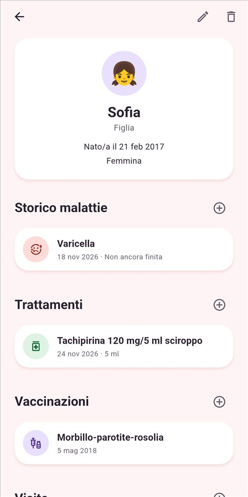
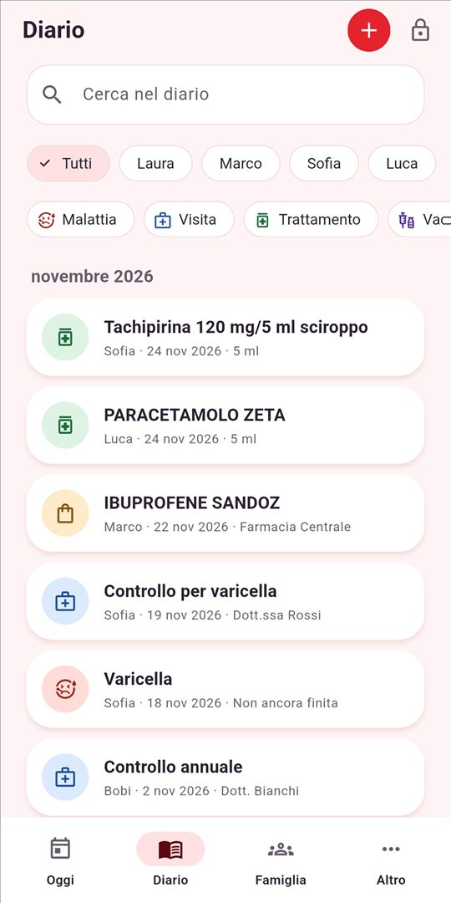
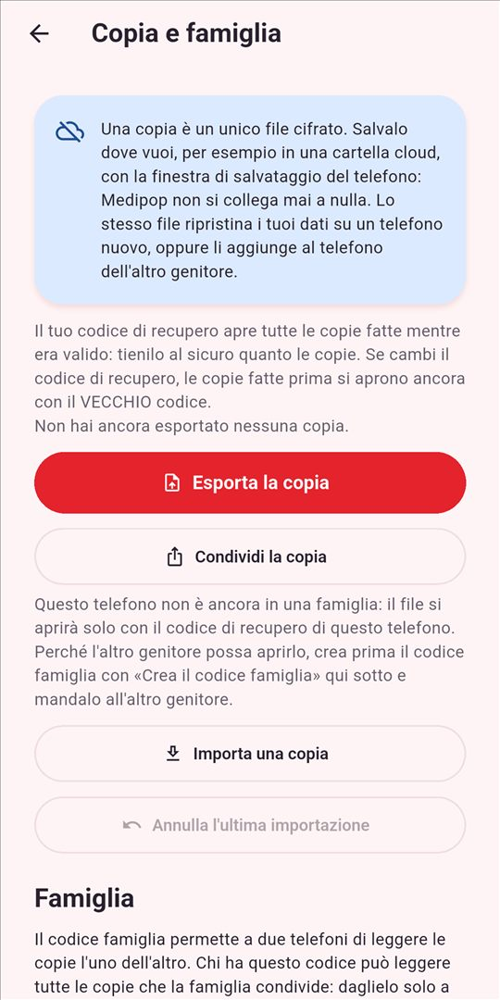
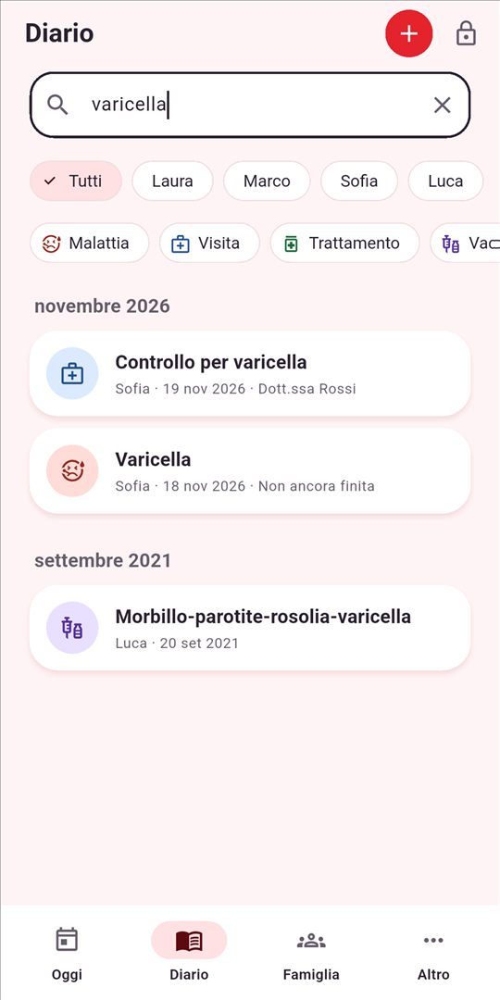

Privée, chiffrée, sans internet
La santé de toute la famille, seulement sur votre téléphone
Medipop est un carnet privé pour les maladies, les consultations, les traitements et les vaccinations des personnes et des animaux de la maison. Ce que vous écrivez reste sur votre téléphone, chiffré.
Bientôt sur l'App Store et Google Play



Ce que fait l'app
-
Sans internet et sans compte
L'app ne se connecte pas à internet et n'a ni compte ni serveur. Aucune publicité, aucune analyse d'usage, aucun suivi.
-
Chiffré, seulement sur le téléphone
Base de données chiffrée en AES-256. La clé est protégée par le téléphone et par un code de récupération que vous seul avez : même le développeur ne peut pas lire vos données.
-
Personnes et animaux
Un profil pour chacun, avec son rôle dans la famille. Vaccinations, maladies, consultations et traitements, avec « Répéter ce traitement » pour ne pas tout réécrire.
-
Échange entre parents
Vous exportez un fichier chiffré, vous l'envoyez avec « Partager » et l'autre parent l'ouvre avec « Ouvrir avec Medipop ». Cela fonctionne aussi entre iPhone et Android.
-
Rappels de médicaments
Vous choisissez l'heure du rappel d'un médicament. Vous choisissez aussi pour quels membres de la famille les recevoir. La notification n'affiche jamais le médicament, au plus le prénom du membre de la famille, sans nom de famille, et vous pouvez le masquer.
-
Cinq langues
En italien, anglais, français, espagnol et allemand. Verrouillage de l'app par empreinte digitale ou par le code PIN du téléphone.
Un aperçu de l'app

Le journal de tout, avec la recherche 
Un traitement, à répéter en un geste 
Notifications : vous choisissez pour qui 
Les vaccinations de chacun 
Sauvegarde et famille : un fichier chiffré 
Cherchez dans tout ce que vous avez écrit
Comment elle protège les données
- Aucun compte, aucun serveur, aucune publicité, aucune analyse d'usage, aucun suivi.
- Aucun accès à internet : l'app ne demande même pas l'autorisation de se connecter.
- Base de données chiffrée en AES-256. La clé est protégée par le téléphone et par un code de récupération que vous seul avez : le développeur ne peut pas lire vos données.
- Sauvegardes chiffrées (fichiers
.medipop) que vous enregistrez ou envoyez où vous voulez, pour changer de téléphone ou pour échanger les données avec l'autre parent.
Si vous perdez le code de récupération et le téléphone, les données sont perdues pour toujours. C'est pourquoi l'app vous demande de le ranger en lieu sûr au premier lancement.
Ce n'est pas un dispositif médical
Medipop conserve uniquement ce que vous écrivez. Elle ne calcule pas les doses, ne donne pas de conseils médicaux, ne pose pas de diagnostic et n'est pas un dispositif médical : elle ne remplace pas le médecin ni le vétérinaire. Il n'est pas possible d'enregistrer des photos ou des documents.
Sources de la liste des médicaments
Pour vous aider à écrire les noms des médicaments, Medipop contient une liste établie à partir de sources publiques. C'est une référence pour les noms, pas une information médicale.
- Fonte: AIFA - Agenzia Italiana del Farmaco, dati aperti, licenza CC-BY 4.0. Données retravaillées par Medipop.
- Source : Base de données publique des médicaments, medicaments.gouv.fr, Licence Ouverte. Retravaillé par Medipop.
- Source: European Medicines Agency (EMA), medicines data. Reuse authorised with acknowledgement of the source.